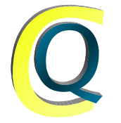

System for Modular Analysis and Continuous Queries

Downloads
Stable Version: 1.9
Development Version: 2.0b
Version 2.0 is a major rewrite in C++ and the APIs have completely changed.
Documentation
- smacq(1) manpage: SMACQ built-in modules
- smacqq(1) manpage: command-line query tool using SMACQ
- API:
[Web],
[PDF]
- Paper in the 2002 SIGCOMM Internet Measurement Workshop
Mailing List
The smacq-workers@lists.sourceforge.net mailing list is used for discussions and
announcements for system developers. Use Listman to subscribe.
Source
The source code is in CVS on Sourceforge
Compiling
Flow is primarily developed and tested on Debian GNU/Linux systems and
MacOS X (Darwin) systems with Fink. The
source code contains a README of the packages that must be installed
to build and use the program.
 Last updated $Date: 2004/09/06 22:34:51 $
Last updated $Date: 2004/09/06 22:34:51 $